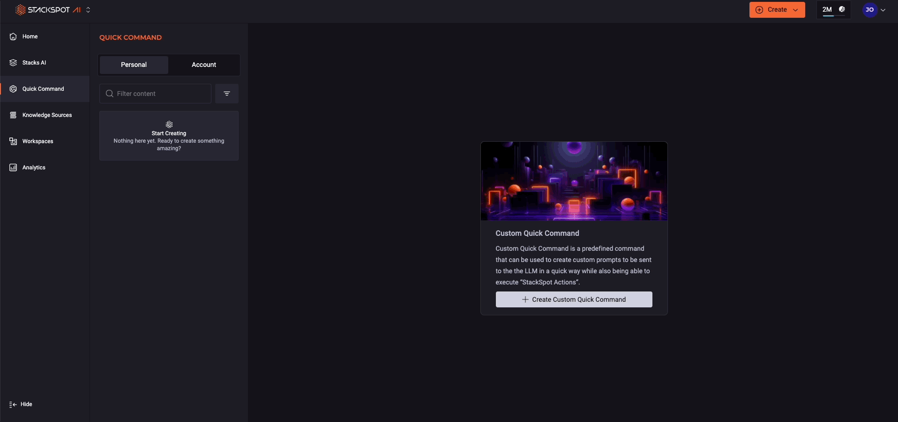
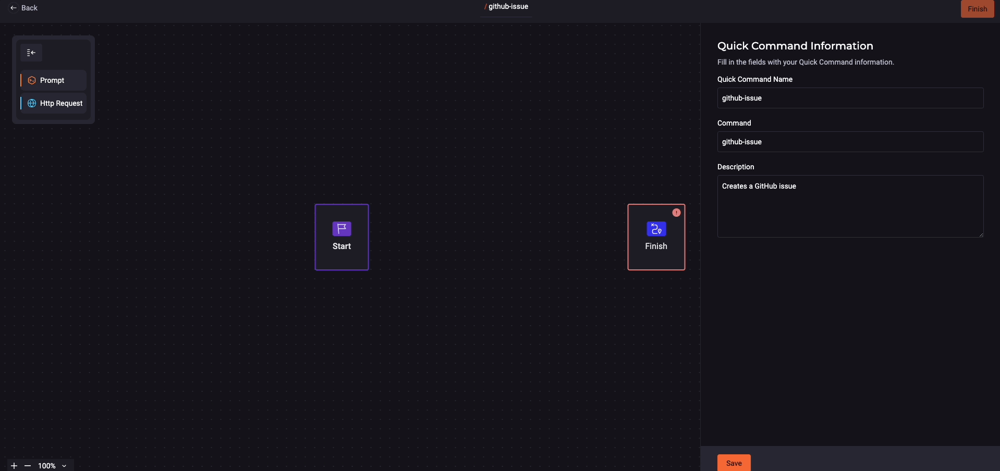

Vem aí mais uma edição do QA Solidário
Faça sua doação a partir de R$10, escolha uma ONG que você queira doar e partipe do QA Solidário
Para nos apoiar na contratação de intérprtes LIBRAS, doe a partir
de R$1
aqui
Como criar Quick Commands IDE
Documentação contendo o passo a passo para criação de um Quick Command com base na documentação oficial da ©StackSpot.
Criando o seu Quick Command
Siga os passos para criar:
Passo 1. Acesse o Portal da StackSpot AI
Passo 2. No menu principal, clique em ‘Quick Command’;
Passo 3. Clique no botão ‘Criar Quick Command’;
Passo 4. Selecione a opção: IDE;
Passo 5. Preencha os campos para adicionar informações sobre o seu Quick Command;
-
Nome do Quick Command: adicione um nome claro e descritivo para o seu comando. Exemplo: Technical Debt
-
Comando: adicione um nome que será usado posteriormente. Ele deve seguir o padrão de slug. Para mais informações sobre Slugs, confira o padrão do slug. Exemplo: technical_debt_1
-
Descrição: adicione uma descrição clara e objetiva sobre o que o seu comando faz. Exemplo: Criar uma issue no GitHub destacando a dívida técnica no código selecionado e sugerir uma forma de correção.
Passo 6. Clique no botão 'Próximo'. Você pode escolher entre usar os templates disponíveis (pré-preenchidos) ou criar um template do zero, conforme sua necessidade.
Passo 7. Clique no botão 'Salvar' e confira o resumo do seu Quick Command
;Confira a imagem de criação do Quick Command:

Criação de um Quick Command de ‘Prompt’
Confira um exemplo de criação de um Quick Command de ‘Prompt’:
1. Clique em 'Criar em branco'. Aperte e arraste a caixa de 'Prompt' para perto do 'Início'. É necessário conectar as caixas com a linha:
2. Preencha os campos na caixa do prompt:
-
o nome do seu prompt: adicione um identificador slug seguindo o padrão do slug
Confira um exemplo: /titulo__da_issue
-
Insira seu prompt: escreva o que você quer que seu comando faça.
Confira a imagem de como criar o prompt:

Seguindo esse passo a passo será possível criar os Quick Commands com os prompts disponibilizados.
Exemplos de Prompts para Quick Commands
Nesta seção é possível copiar alguns Quick Commands para que vocês possam usar no dia a dia de vocês, ajustando conforme a necessidade do seu projeto.
Cria documentação de testes para uma classe
Nome do Quick Command: cria-testes-para-classe
descrição: Este Quick Command tem por objetivo criar cenários de testes de acordo com a pirâmide de testes ( testes unitários, testes integrados e testes e2e) para uma determinada classe.
identifica-linguagem-classe
Dado que uma classe é selecionada, identifique em qual linguagem essa classe foi desenvolvidacria-teste-unitario
Crie testes unitários baseado no padrão AAA(Arrange, Act, Assert), utilizando a melhor ferramenta de testes para a linguagem da classe e seguindo as seguintes regras:
Principais regras do Quality Gate do SonarQube:
Cobertura de Testes: Um percentual mínimo de cobertura de testes de código deve ser atingido. Isso garante que uma parte significativa do código é testada.
Bugs: O número de bugs deve ser zero ou abaixo de um determindado limite. Bugs são considerados erros no código que podem causar falhas.
Vulnerabilidade: O número de vulnerabilidades de segurança dever ser zero ou abaixo de um limite aceitável.
Code Smells: O número de code smells, que são indicadores de problemas de manutenção de código, deve ser mantido dentro de um limite aceitável.
Débito Técnico: O débito técnico, que representa o esforço necessário para corrigir problemas no código, deve ser mantido dentro de um limite aceitável.
Complexidade Ciclomática: A complexidade do código deve ser mantida dentro de limites que garantam a facilidade de manutenção e compreensão.
Duplicação de código: O percentual de duplicação de código deve ser bauxi para evitar redundâncias desnecessárias.
Seguindo ainda essas regras:
1. Isolamento: Cada teste unitário deve isolar uma única unidade de código, como uma função ou método, para garantir que o teste seja específico e preciso.
2. Independência: Os testes unitários devem ser independentes uns dos outros. Isso significa que a execução de um teste não deve depender do resultado de outro.
3. Automatização: Sempre que possível, automatize os testes unitários para aumentar a eficiência e garantir a repetibilidade.
4. Cobertura de Código: Os testes unitários devem cobrir todas as partes críticas do código. Utilize ferramentas de cobertura de código para identificar áreas não testadas.
5. Nomenclatura Clara: Nomeie os testes de forma clara e descritiva para que outros desenvolvedores possam entender facilmente o que está sendo testado.
6. Configuração e Limpeza: Cada teste deve configurar seu próprio ambiente e limpar qualquer estado alterado após a execução. Isso garante que os testes não interfiram uns nos outros.
7. Testes de Limite e Equivalência: Utilize técnicas como análise de valor limite e partição de equivalência para garantir que os testes cubram uma ampla gama de entradas possíveis.
8. Mocking e Stubbing: Utilize mocks e stubs para simular dependências externas e garantir que os testes sejam focados na unidade de código específica.
9. Execução Rápida: Os testes unitários devem ser rápidos para executar, permitindo que sejam executados frequentemente durante o desenvolvimento.
10. Documentação: Documente os testes unitários para que outros desenvolvedores possam entender o propósito e a lógica por trás de cada teste.
cria-teste-integrado
Crie os seguintes artefatos para testar a integração desta classe:
1 - Feature em Gherkin (formato .feature): Uma feature em Gherkin que descreve cenários de teste para esta classe. Os cenários devem cobrir pelo menos os seguintes aspectos: [Liste pelo menos 3 cenários de teste relevantes, com exemplos de entrada e resultados esperados. Se possível, inclua casos positivos e negativos]. Use português nos steps.
2 - Classe de Validação: Crie uma classe Java chamada [NomeDaClasseLida]Validator que contenha métodos de validação para cada cenário descrito na feature Gherkin. Esses métodos devem chamar os métodos correspondentes da classe [NomeDaClasseLida] e retornar true se o resultado for como esperado, e false caso contrário (ou lançar uma exceção apropriada).
3 - Classe de Steps (Cucumber ou outro framework): Crie uma classe de steps usando Cucumber que implemente os steps da feature Gherkin em português. Os steps devem chamar os métodos de validação da classe [NomeDaClasseLida]Validator e usar assertions para verificar os resultados.
cria-teste-e2e
Escreva testes E2E baseado na linguagem da classe e seguindo os seguintes critérios:
Cobertura Completa do Fluxo de Trabalho:
Os testes E2E devem cobrir fluxos de trabalho completos do usuário, desde o início até o fim. Isso inclui todas as etapas que um usuário real executaria para concluir uma tarefa.
Ambiente Realista:
Os testes devem ser executados em um ambiente que imite o mais próximo possível o ambiente de produção. Isso inclui usar dados reais ou quase reais e configurar o ambiente de teste para refletir a configuração de produção.
Automatização:
Sempre que possível, os testes E2E devem ser automatizados para garantir que possam ser executados de forma consistente e repetida sem intervenção manual.
Validação de Resultados:
Os testes devem validar não apenas que as ações foram concluídas com sucesso, mas também que os resultados são os esperados. Isso pode incluir verificar o estado do sistema, a saída de dados e a interface do usuário.
Resiliência e Robustez:
Os testes devem ser resilientes a pequenas mudanças na interface do usuário e robustos o suficiente para lidar com variações nos dados de entrada.
Desempenho e Tempo de Execução:
Embora os testes E2E possam ser mais lentos do que outros tipos de testes, é importante garantir que eles sejam otimizados para desempenho e não demorem excessivamente para serem executados.
Isolamento:
Cada teste E2E deve ser isolado e independente dos outros testes. Isso significa que a execução de um teste não deve afetar o estado do sistema de forma que impacte outros testes.
Manutenção e Clareza:
Os testes devem ser escritos de forma clara e fácil de entender, para que possam ser mantidos e atualizados conforme o sistema evolui.
Integração Contínua:
Os testes E2E devem ser integrados ao pipeline de integração contínua (CI) para garantir que sejam executados automaticamente em cada mudança de código.
Relatórios e Logs:
Os testes devem gerar relatórios detalhados e logs que possam ser usados para diagnosticar falhas e entender o comportamento do sistema durante a execução dos testes.
cria-doc-qualidade
Crie a documentação completa de testes e a implementação dos testes.
A documentação deve atender aos seguintes requisitos, fornecendo exemplos de código e casos de teste para cada item, alinhando-se às boas práticas do Syllabus CTFL 4.0 e ISO 29119:
1. Planejamento e Estratégia (alinhado com CTFL 4.0 - Planejamento e Controle de Testes):
Objetivo: Documentar e testar completamente a funcionalidade da classe fornecida, garantindo a conformidade com os requisitos e a qualidade do software.
Requisitos: Todos os métodos da classe devem ser testados exaustivamente, considerando requisitos funcionais e não funcionais (performance, segurança, usabilidade, etc.). A cobertura de código deve ser maximizada, buscando atingir um nível aceitável de acordo com as métricas definidas (ex: 80%).
Recursos: Linguagem de programação usada na classe, framework de testes (especifique se houver um preferido, caso contrário, sugira um adequado à linguagem – considerando a possibilidade de testes automatizados, como preconizado pela ISO 29119), ferramenta de documentação (ex: Sphinx, JSDoc). Defina recursos humanos envolvidos (roles e responsabilidades).
Plano de Teste: Descreva os tipos de teste a serem utilizados (unitários, de integração, se aplicável, seguindo a abordagem da ISO 29119 para a seleção de técnicas de teste), a abordagem de teste (test-driven development, se aplicável), os critérios de entrada (pré-condições para os testes) e saída (pós-condições esperadas), incluindo métricas de sucesso. Inclua um cronograma estimado e as atividades definidas no plano (alinhado com CTFL 4.0 - Gerenciamento de Testes).
Gerenciamento de Riscos: Identifique potenciais riscos, como complexidade da classe, dependências externas e possíveis problemas de performance. Descreva como esses riscos serão mitigados, incluindo planos de contingência (alinhado com CTFL 4.0 - Gerenciamento de Riscos). Utilize técnicas de análise de risco e priorização de riscos.
2. Documentação de Requisitos (alinhado com ISO 29119 - Especificação de Testes):
Requisitos de teste (ISO 29119): Liste os requisitos funcionais e não funcionais da classe, incluindo comportamento esperado para cada método, tratamento de erros e restrições de performance (se aplicável). Especifique os critérios de teste com clareza.
Casos de Teste (ISO 29119): Para cada método da classe, crie casos de teste detalhados com identificador único, descrição concisa, premissas, passos de execução, dados de entrada esperados, resultados esperados, critérios de aprovação/reprovação e o método de teste a ser usado (ex: caixa preta/caixa branca). Considere casos de borda, valores limites, valores nulos e testes negativos.
Cenários de Teste (ISO 29119): Descreva cenários específicos, como tratamento de entradas inválidas, exceções, cenários de uso comuns e cenários de uso incomuns, considerando diferentes caminhos de execução.
Documentação de requisitos do usuário (se aplicável): Descreva como o usuário interagiria com a classe, caso ela seja parte de uma API ou interface. A documentação deve ser clara, concisa e acessível ao usuário final.
3. Execução e Relato de Testes (alinhado com CTFL 4.0 - Execução de Testes e ISO 29119 - Execução de Testes):
Gerenciamento de Defeitos (ISO 29119): Descreva como os defeitos serão rastreados (ex: usando um sistema de rastreamento de bugs ou comentários no código). Inclua um exemplo de como documentar um defeito encontrado durante o teste, com detalhes como ID, descrição, severidade, prioridade, passos para reprodução, e ambiente de teste.
Relatórios de Teste (ISO 29119): Gere um relatório de teste detalhado incluindo resumo executivo, abrangência de testes, métricas (cobertura de código, taxa de defeitos), registro de execução dos testes (pass/fail), sumário de defeitos e recomendações. Este relatório deve seguir um formato consistente e padrão.
Evidências de teste (ISO 29119): Indique como as evidências de teste serão armazenadas (ex: logs, screenshots de falhas, vídeos). As evidências devem ser rastreáveis aos casos de teste específicos.
Rastreamento de Defeitos (ISO 29119): Explique como o processo de rastreamento de defeitos será executado, desde a sua detecção até a sua resolução, incluindo a definição de estados para defeitos (ex: aberto, em investigação, corrigido, verificado, fechado).
4. Boas Práticas de Documentação (alinhado com CTFL 4.0 - Documentação de Testes):
Clareza e Concisão: A documentação deve ser clara, concisa e fácil de entender.
Organização e Estrutura: Utilize uma estrutura lógica para apresentar a informação (ex: Markdown ou reStructuredText).
Padronização: Siga um padrão de documentação consistente (ex: Google Style Guide para Python).
Padronização:Revisão e Aprovação: Indique como a revisão e aprovação da documentação serão realizadas, incluindo as roles e responsabilidades de cada participante da revisão. A revisão deve garantir a rastreabilidade dos requisitos aos casos de teste.
Atualização e Controle de Versões: Explique como a documentação será atualizada e controlada (ex: Git).
5. Boas Práticas de Testes (alinhado com ISO 29119):
Inclua uma seção detalhando as técnicas de teste utilizadas, justificando sua escolha com base na natureza da classe e nos riscos identificados.
Descreva como os testes foram projetados para garantir a independência e a repetibilidade.
Documente qualquer suposição feita durante o processo de teste.
6. Ferramentas e Recursos:
Ferramentas de teste: Especifique as ferramentas usadas (ex: pytest, JUnit, unittest).
Documentação online: Se uma plataforma online for usada, especifique qual.
A saída deve incluir:
A documentação da classe (ex: docstrings, comentários, README).
O código de teste unitário.
Um relatório de teste completo.